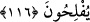

116. Dillerinizin uydurduğu yalana dayanarak “Bu helâldir, şu da haramdır”
demeyin, çünkü Allah’a karşı yalan uydurmuş olursunuz. Şüphesiz Allah’a karşı
yalan uyduranlar kurtuluşa eremezler.
Ey Mekke halkı! “Dillerinizin uydurduğu yalana dayanarak “Bu helâldir, şu da
haramdır” demeyin,” Yâni bir vahye ve ona dayanan şer’î bir kıyasa istinad etmek
şöyle dursun sağlam bir mülahaza ve fikir olmadan “Şu hayvanların karınlarında
olanlar yalnız erkeklerimize aittir, kadınlarımıza ise haram kılınmıştır.” diyerek
dillerinizin vasfettikleri hayvanlarınız hakkında helaldir ve haramdır demeyin. Âyetteki
“demeyin” ifâdesi, “Allah yolunda öldürülenlere ‘ölüler’ demeyin.” (el-Bakara,
2/154) âyetindeki “demeyin” ifâdesi gibidir.
Âyette “yalan” oluşunun sözlerine takdim edilmesi, mubalağa içindir. Yine Sa‘dî
Çelebi’nin Hâşiyesi’nde belirtildiği gibi burada sadece dil ile vasfetmek üzerine bir
hüküm bina edilmeyeceğine ima vardır. Ebü’l-Leys Tefsîri’nde belirtildiğine göre bu
âyette kadı ve müftülere delilsiz ve beyansız görüş ifade etmemeleri için bir tenbih
olduğu söylenir.
“Çünkü Allah’a karşı yalan uydurmuş olursunuz.” Helal ve haramın dayanağı ancak
Allah’ın emridir. Haram ve helal oluşuna hükmetmek helal ve haram kılma, Allah’tan
olmadığı halde Allah’a isnad etmektir.
Âyette işâret vardır ki, zan ve gurur (aldanma) ile “Biz öyle bir makama ulaştık ki
onda bazı şer‘î haramlar bize helal ve bazı helaller de haram hale gelmiştir.” diyen
kimseler, bu makamı bize Allah verdi diyerek Allah’a yalan iftirada bulunmaktadırlar.
Nitekim bu her şeyi kendilerine mübah görenlerin (İbâhiyye) halidir. et-Te’vîlâtü’n-
Necmiyye’de böyle geçmektedir.
“Şüphesiz” işlerin herhangi birinde “Allah’a karşı yalan uyduranlar kurtuluşa
eremezler.” Elde etmek için iftirada bulundukları arzularına nail olmazlar.
117. (Kazandıkları) pek az bir menfaattir. Halbuki onlar için elem verici bir azap
vardır.
Onların üzerinde bulundukları bu Câhiliyye işlerinin menfaati, pek yakında sona
erecek “pek az bir menfaattir. Halbuki onlar için” âhirette mahiyeti ve hakikati
bilinemeyen “elem verici bir azap vardır.”